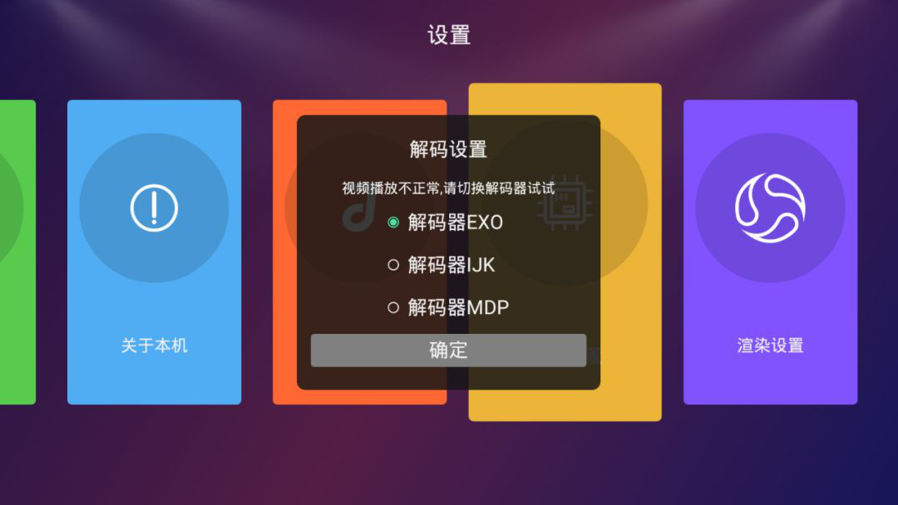
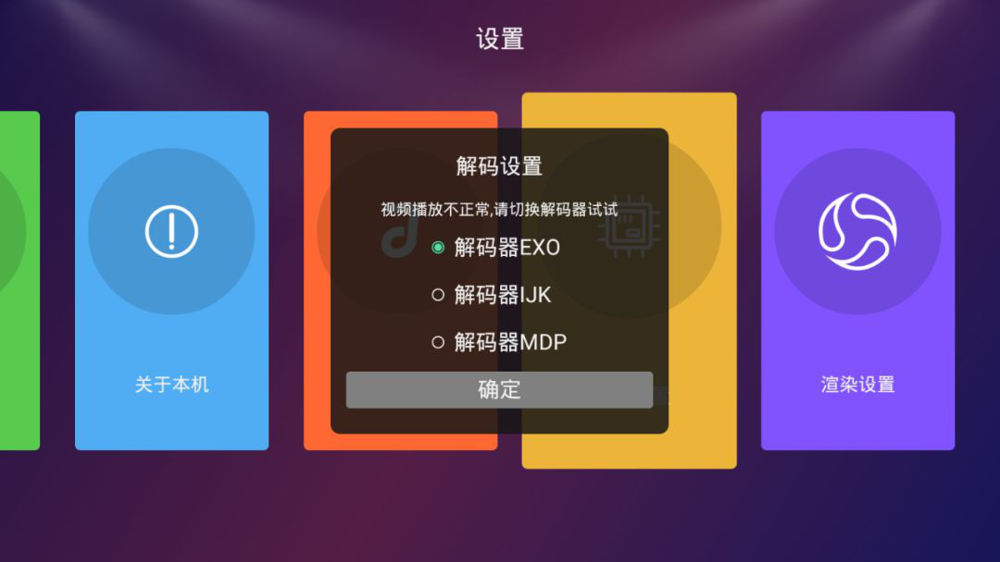

一、音乐跟MV画面不同步
->打开金麦客专业K歌应用，进入首页，并打开设置(首页右上角)
选择“解码器”其他模式，建议优先级：EXO>IJK>MDP模式，完成切换后，需重启应用
一、音乐跟MV画面不同步
->打开金麦客专业K歌应用，进入首页，并打开设置(首页右上角)
选择“解码器”其他模式，建议优先级：EXO>IJK>MDP模式，完成切换后，需重启应用
二、MV播放有一定的缓冲时间
为提高用户体验，全曲库为在线播放模式，因HD高清MV文件较大，若存在卡顿的情况，建议切换更流畅的网络视听。
三、播放后无法自动切歌
运营商用户，可先重启应用，若仍没有解决，请留下您的联系方式，会有客服与您联系解决问题。其他用户，打开金麦客专业K歌应用，进入首页->打开设置(首页右上角) -> “解码器” 选择其他模式。